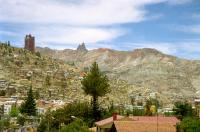
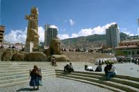

|
Lundi 8 octobre
Il est 10H30 et on a déjà pris en guise de petit déj quelques empanadas de
queso, de petits chausons fourrés au fromage, il en existe aussi au poulet ou
au boeuf. Pour le petit déj, nous on préfère ceux au fromage et surtout ceux
de la place Mendoza en dessous de notre hotel. La boutique fait aussi resto,
mais un resto qui ne sert que des empanadas. Elle est ouverte sur la rue et
des filles avec des plateaux sortis du four font l'aller retour entre la cuisine
et un grand comptoir installé juste à l'entrée. Et à la caisse, assis sur un
haut tabouret, il y a ce type, sans doute le patron. Il est argentin et a l'air
complètement disjoncté. Avec son regard un peu allumé, son visage souriant,
son air sympa et ses longs cheveux noirs bouclés, il ressemble un peu à Otto,
le chauffeur de bus dans les Simpson. Pour ceux qui connaissent.
A midi, un taxi nous emène vers le bas de La Paz, un quartier dont on ne soupçonnait
même pas l'existence car pour nous le bas de La Paz, c'était le centre ville.
Et bien non, ça descend encore. Et si un grand nombre de gens vivent ici sous
le seuil de pauvreté, le bas de La Paz est vraiment luxueux. Les maisons sont
splendides et entretenues. On va manger chez Marie Eugénie et Marcelo, les parents
de Marcelo Junior, le correspondant bolivien de Jéjé avec qui il a gardé le
contact depuis plus de 11 ans. Mais ce que ne nous avait pas dit Jéjé, c'est
que sa "famille" bolivienne fait partie de ce que l'on peut appeler la classe
plutôt élevée de la population. Marie Eugénie et Marcelo sont vraiment accueillants.
Lui possédait des mines dans le Sud Lipez. Ils vivent dans une superbe maison
et un bon repas nous attend. Nous, on est habillés un peu n'importe comment
mais ils ne semblent pas nous en tenir rigueur...
Changement de décor. L'après passe très vite dans la cour inrtérieure de notre
modeste hôtel où Jéjé nous raconte un peu ce qui se passe chez nous en France.
C'est sympa de revoir une tête connue et d'entendre parler de nos amis...
Mardi 9 octobre
Journée culturelle mais pas trop, on passe une partie de la matinée à visiter
4 petits musées installés dans de vieilles demeures coloniales de la Calle Jaen,
sans doute la seule rue de La Paz qui reste de cette époque et qui a survécu
au modernisme. Cette rue étroite est très jolie et ressemble aux rues de Sucre.
Les maisons qui abritent les musées valent à elles seules la visite. C'est un
enchevêtrement de cours intérieures et de balcons qui donnent envie de flâner.
Un des musées s'appelle le musée du litoral bolivien et est consacré au bout
de terre que possédait la Bolivie et qui lui donnait un accès stratégique à
l'Océan.Cette terre est aujourd'hui chilienne et a été perdue dans une guerre
en 1879 où les anglais soucieux de continuer tranquillement le salpêtre et le
guano du littoral ont encouragé et soutenu le Chili. Des interêts économiques
étranger à l'origine d'une guerre... Banal. C'est comme ça que la Bolivie perdra
plus tard d'autres parties de son territoire. En 1901, contre le Brésil, pour
le contrôle du caoutchouc. Mais aussi en 1935 contre le Paraguay suite à des
manoeuvres de la Shell et de la Standard Oil. Pour du pétrole qui n'existait
même pas. Ca s'appelle la guerre du Chaco...
A midi, on se égale de vainde. De l'agneau pour Marion, du boeuf pour Jéjé
et moi. Succulent, bon marché et les morceaux sont énormes. Presque trop. On
mange avec Ana Maria, une charmante jeune fille, la cousine de Marcelo. Elle
finit ses études pour devenir avocat, spécialiste du droit des entreprises.
Il en connaît du monde ce Jéjé...
Suite du voyage : Tiahuanaco et Titicaca
|

Bolivie
La Paz
|

Bolivie
La Paz
|
|
|